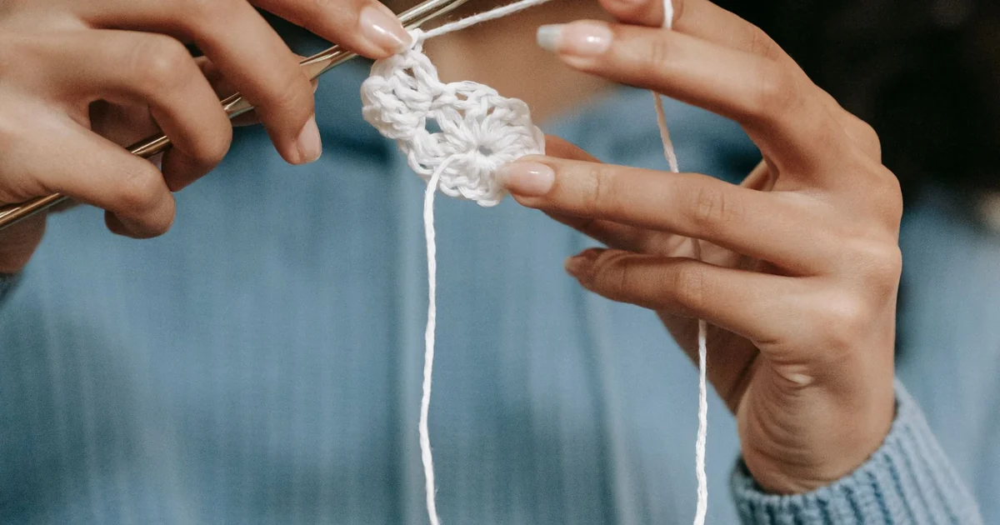
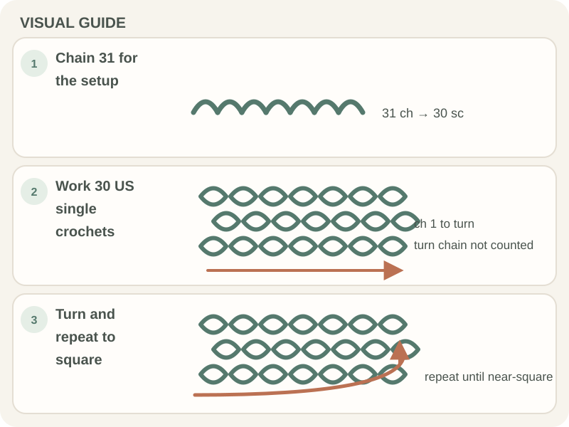

Beginner Projects · Beginner guide
How to Crochet a Simple Dishcloth
Make a US single-crochet dishcloth sample and keep its stitch count steady from row to row.

A dishcloth is a practical place to practice even rows. This sample gives a count, but not a guaranteed finished size; fiber, hook, and tension affect the fabric.
Before you begin
Choose yarn whose label and care instructions suit your intended use. Use the same yarn and hook throughout the sample.
Step-by-step instructions
- Chain 31. Work a US sc into the second chain from the hook and each remaining chain: 30 stitches.
- Chain 1 and turn. Work one sc in each stitch, keeping 30 across.
- Repeat until the fabric is close to square, measuring it flat instead of relying on a fixed row total.
- Fasten off and weave in ends. Follow the yarn label’s care directions before washing.

What to check
Measure as the cloth grows
The first row has 30 stitches based on these instructions. If later rows differ, inspect the turning chain and edge stitches. “Close to square” is not a precise dimension.
Frequently asked questions
What yarn should I use?
Choose a washable yarn suitable for the intended use and follow its care label. Fiber affects texture and care.
How many rows should I make?
No row total is specified. Stop when the relaxed cloth is close to square or suits your preferred size.
Does this sample make a standard-size dishcloth?
No. It gives a 30-stitch width and suggests stopping when the cloth is close to square, but yarn, hook, and tension determine the dimensions.
Follow the sample count across every row
The instructions chain 31 and work a US single crochet into the second chain from the hook and each remaining chain, making 30 stitches. The chain-one turn is not counted in this sample. On every later row, work into 30 stitch tops. If a row has 29 or 31, locate the missed or added edge stitch before continuing; a small count change can make the sides slope.
Choose yarn and care for the intended use
Check the yarn label and pattern before using a fiber for a household cloth. Fiber, stitch, and construction affect texture and care, and the label’s washing directions apply to that specific yarn. This sample does not claim tested absorbency or durability. If the cloth will be washed regularly, choose materials whose care instructions fit your needs and follow the label when washing. A swatch can show how the fabric feels and changes after care, but it cannot guarantee how every finished item will perform.
Measure the shape as it grows
“Close to square” is a visual goal in this sample, not a fixed measurement. Lay the cloth flat and compare width with height. If you want exact dimensions, follow a pattern that gives them and make its gauge swatch. A different yarn or hook can change the size even when the row count stays constant. Avoid stretching the edges to square them; check stitch count and tension first.
Check the fabric before choosing a final size
Work a few rows and inspect whether the cloth lies flat and the sides remain even. Because this sample does not set a finished measurement, decide on a size only after you see the width from your yarn and hook. If the cloth is meant to be square, compare the relaxed height and width as it grows. A different stitch, hook, or yarn can change both. Fasten off only after the shape is close to the dimensions or use you have in mind, and keep care instructions with the project.
Common mistakes and how to fix them
- Counting the turning chain as a stitch in this sample. That would add a stitch beyond the stated 30. Other patterns may count it, so check the pattern.
- Assuming the row total sets a finished measurement. The sample does not specify a size. Measure the relaxed cloth as it grows.
- Ignoring yarn care instructions. Use the label for the selected yarn instead of assuming all fibers wash alike.
Tips that make it easier
- Mark the first or last stitch if you lose the row edge.
- Measure the cloth flat every few rows rather than aiming for an unstated row count.
- Keep the yarn band with the project so washing guidance is available later.
A useful next step
Check the pattern’s steps, materials, and fit on a small sample before committing to the full project. Use the written counts and care instructions for the yarn you choose.